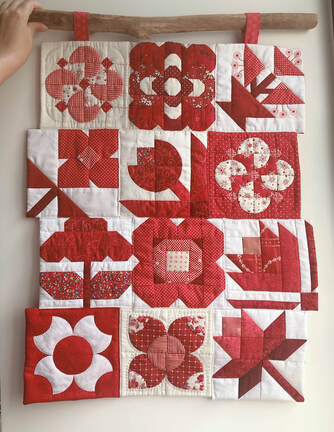
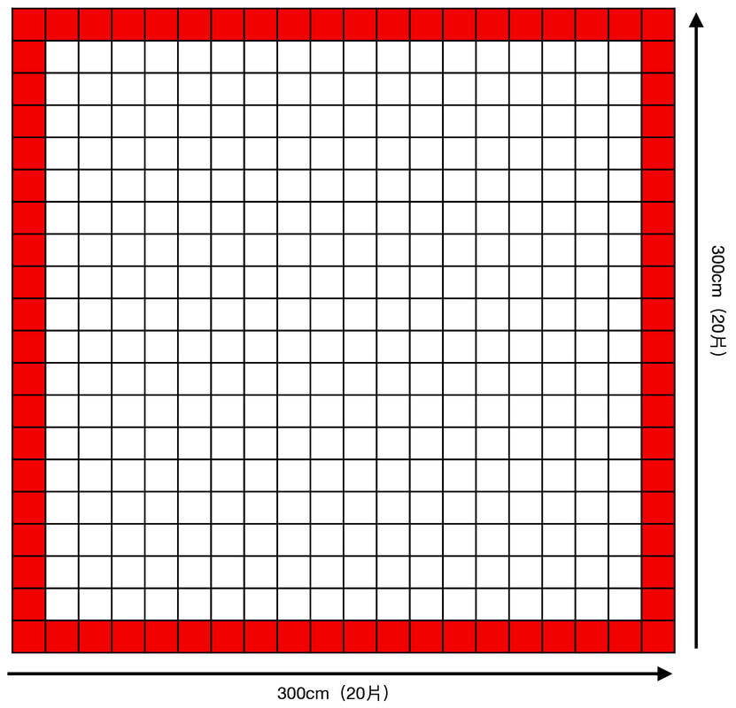
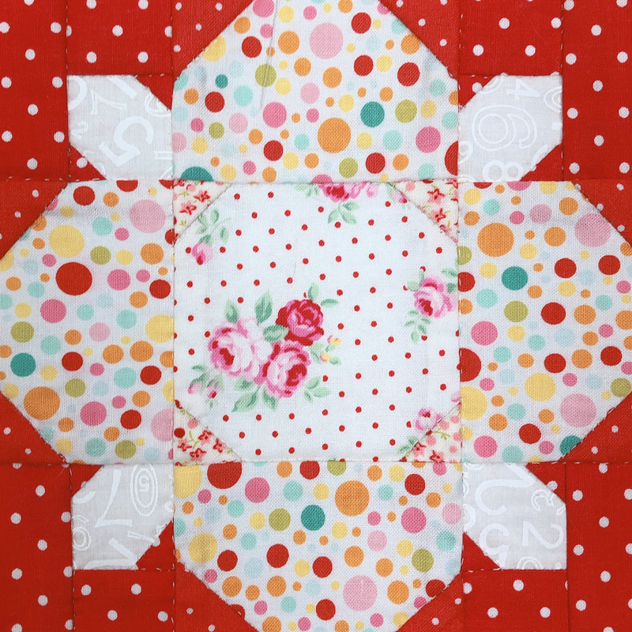

作品於 2021/11/12～11/14「2021友好拼布手作節」中， 以展場焦點方式展出。
Theme Quilt
萬紫千紅－主題作品募集
2021 友好拼布手作節
Work Submission Deadline
作品收件截止日
2021/08/10
歷史資料｜本頁保留 2021「萬紫千紅」主題作品募集活動內容，原報名及收件均已結束。
About the Project
以紅白拼布組成「萬紫千紅」
繼 2019 年首度舉辦結合展覽、比賽及市集的「友好拼布手作節」以來， 受到廣大拼布相關產業及同好的熱烈迴響。 台灣國際拼布友好會秉持著推廣拼布藝術的創會初衷， 於 2021 年再次舉辦第二屆友好拼布手作節，並擬定以「萬紫千紅」為活動主題， 藉此表達拼布人豐富多采的創意及工藝技藝。
本次為主題作品特別設計了 20 種具花朵意象的拼布圖稿， 並只搭配單一紅色調，就是為了呼應「萬紫千紅」的展覽主題， 代表著我們對拼布如紅似火般的熱愛及純粹。 廣邀喜愛拼布的朋友，一起用針線和布料拼出屬於我們燦爛的拼布生活。
Goals
主題作品「萬紫千紅」活動目標
展出結束後，爭取以團體名義至海外拼布展中展出 （視新冠肺炎疫情狀況），並將作品進行義賣後， 所得全數捐贈予公益團體。
Eligibility
參與資格
有基本縫紉程度的拼布愛好者。
對拼布有興趣的初學者，亦可透過拼布教室或工作室老師指導後參加。
Making Rules
作品製作規定
尺寸：15cm × 15cm（包光後的完成尺寸）。
需由表布＋舖棉＋底布三層壓線完成的拼布作品，手縫、機縫均可。
若搭配刺繡或使用包釦等裝飾物，請務必確保其牢固性。
為確保組合時作品的平整性，請使用主辦單位所提供的鋪棉，或相同厚薄度的鋪棉。
製作順序為：表布拼接、燙貼鋪棉、表布與底布正面相對車縫一圈、從返口翻至正面、壓線及返口縫合。
圖稿上的「底色」一律為白色；若圖稿註記「請製作紅底版」，底色改為紅色。底布顏色比照表布底色，後背布顏色亦與表布底色一致。
所有布料請使用「紅」或「白」色系；若因布料選擇不足需加入其它顏色，面積不得超過 20%，且視覺上仍以紅色為主。
請以油性筆在胚布或米白色布料寫上作者姓名後，貼縫在作品背面右下角，以備展出時製作者對照。
若作品不符合上述條件，或品質不良導致無法組合成大型壁飾時，主辦單位有權捨棄該作品且不予退還。
Examples
製作範例
Design
作品說明
- 作品以「紅白拼布」概念及「萬紫千紅」主題，設計 20 個不同花朵姿態的圖形。
- 每個圖形預計各募集 20 片，總計 400 片組合成一大型壁飾。
- 環繞四周的圖形以「紅底」配色為主，遠看時可呈現為壁飾的邊框，共計 76 片；其餘圖形以「白底」配色為主，共計 324 片。
- 因配色以紅白色系為限，請多使用不同明暗度（深淺色）的布料做搭配，以突顯花朵圖形的設計。



Registration
原報名方式
紙本報名
請填妥報名表並檢附掛號回郵信封。 為方便快速作業，回郵信封上請務必填寫報名者姓名及收件地址， 但只要附上掛號郵票（個人 36 元、教室 80 元郵資，請勿黏貼在回郵信封上）。
10841 台北市洛陽街 55 號 11 樓-1
主題作品－伍麗華老師 收
聯絡電話：0933-917555
報名期間：即日起至 2021/05/31 （若 400 片發送完畢即提早截止報名）。
收到報名表及掛號回郵信封後，即寄送設計圖稿及鋪棉， 並邀請參與者加入 LINE「2021 紅白拼布募集群組」， 以便詢問製作相關問題。
歡迎各大教室與學員一同參與，每位參與者均須填寫一張報名表， 再由老師統一寄送即可；並請依照指派之圖形編號及指定底色進行製作。
Support
原活動贊助方式
若希望擁有一整套（20 個）萬紫千紅圖型， 原活動歡迎捐款贊助本會 100 元。
- 銀行
- 上海商業銀行 竹北分行
- 戶名
- 台灣國際拼布友好會 洪藝芳
- 帳號
- 7010-20000-12586
Submission
作品收件及寄送處
作品收件截止日
2021/08/10（以郵戳為憑）
作品寄送處
81361 高雄市左營區華夏路 1388 號 14 樓
主題作品－白梅彣老師 收
TEL：0936-884545
Event Information
展出資訊
主辦單位台灣國際拼布友好會
協辦單位臺灣喜佳股份有限公司
活動地點台北松山文創園區一號倉庫
展出時間2021/11/12（五）－11/14（日）

點擊圖片返回 2021 友好拼布手作節